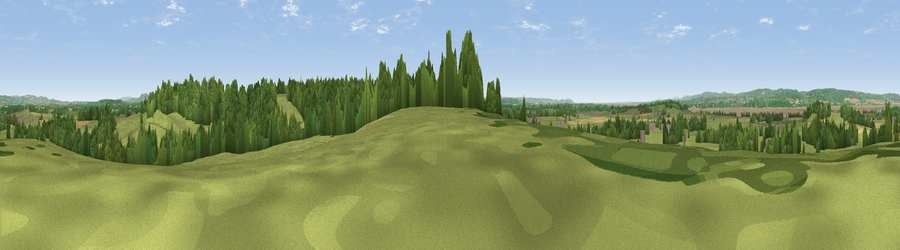

Viewpoint near Littleton-upon-Severn
#20510 in England · top 35% of its area beats it · near Littleton-upon-SevernThe view, rendered

A 360° render of this exact spot computed from the terrain model, tree cover and land cover — summer colours, afternoon light, calibrated against photographs of famous viewpoints. Real trees, hedges and buildings will differ in detail.
The panorama
Grey silhouette: terrain skyline in each direction (720 bearings, Earth curvature and refraction included). Dashed green: skyline with trees (+15 m) and buildings (+8 m) as obstacles. Blue strip: how far the ground is visible on each bearing.
Where the view opens
Wedge length = distance to the farthest visible ground on that bearing (vegetation-aware). Rings at 10, 25 and 50 km.
What fills the view
68% grassland · 20% woodland · 7% cropland · 3% water · 2% built-up
Angular shares of the visible panorama (visual magnitude), not map area. Landscape diversity 0.41 (0–1 Shannon).
Key numbers
More beautiful places nearby
The staircase of upgrades: each row has a higher view potential than everything closer. Driving times are estimates from straight-line distance, calibrated against real road routing — check an actual route before setting out.
| Place | Direction | Drive | Score |
|---|---|---|---|
| Viewpoint near Aust | W · 3 km | ~6 min | 59.4 |
| Viewpoint near Aust | W · 4 km | ~8 min | 60.1 |
| Viewpoint near Almondsbury | S · 7 km | ~14 min | 68.3 |
| Viewpoint near Hewelsfield | NNW · 11 km | ~21 min | 69.6 |
| Viewpoint near Hewelsfield | NNW · 12 km | ~22 min | 70.7 |
| Viewpoint near North Nibley | ENE · 15 km | ~27 min | 76.3 |
| Viewpoint near Stinchcombe | ENE · 15 km | ~27 min | 80.5 |
| Garway Hill | NNW · 39 km | ~58 min | 84.6 |
51.60721, -2.57214 · source: screening · position refined by local search. Computed location — check access rights before visiting.